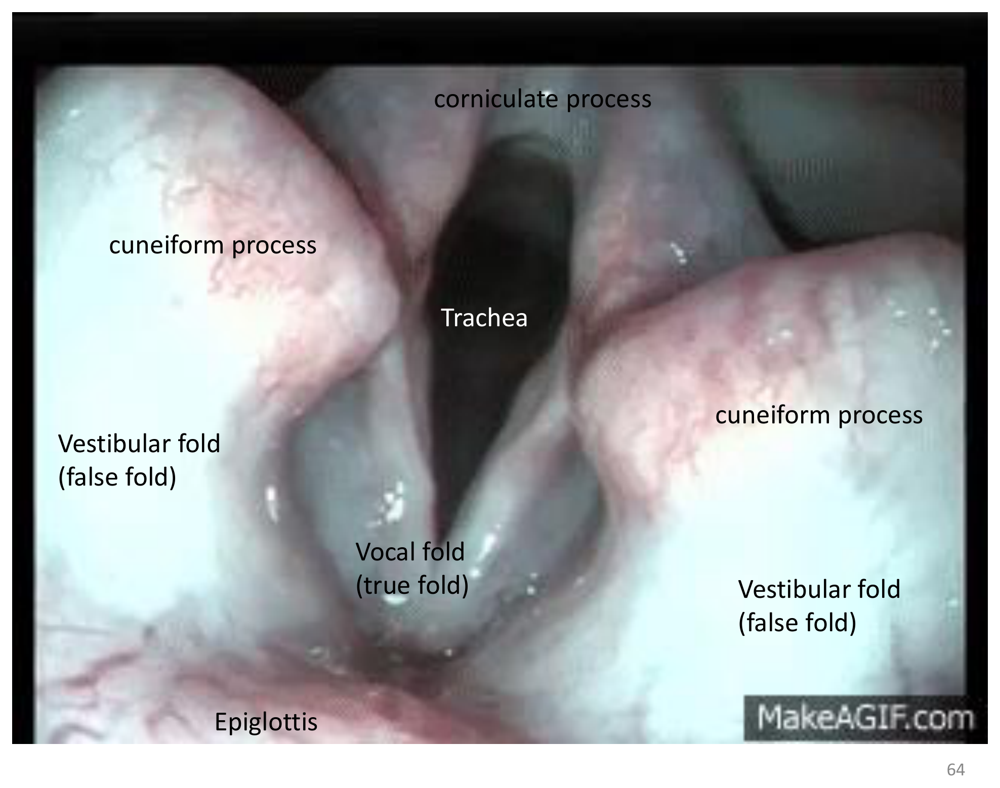
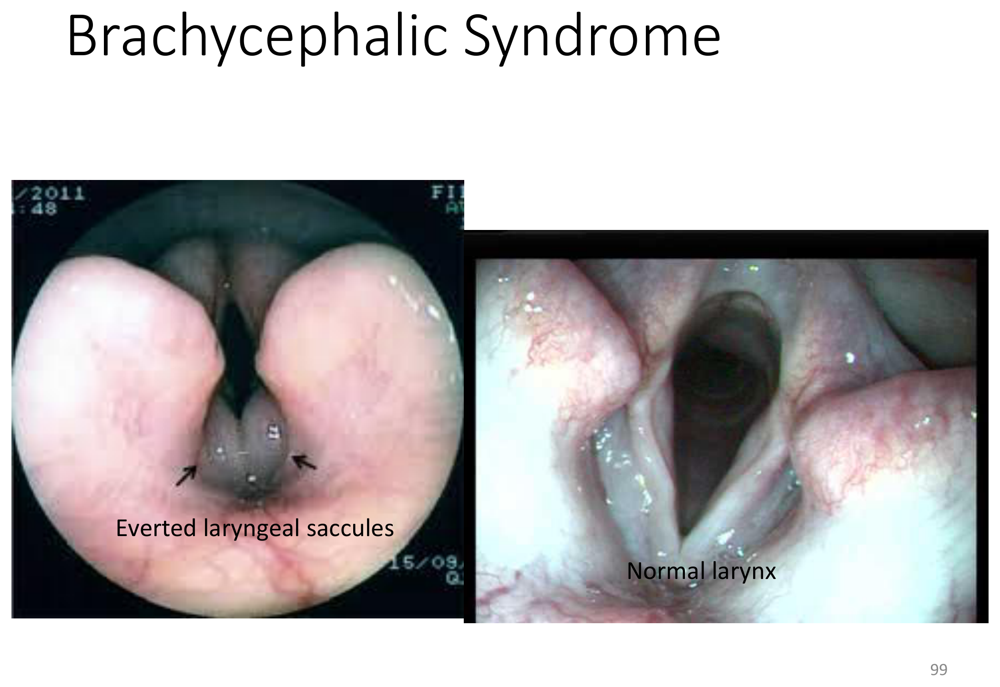
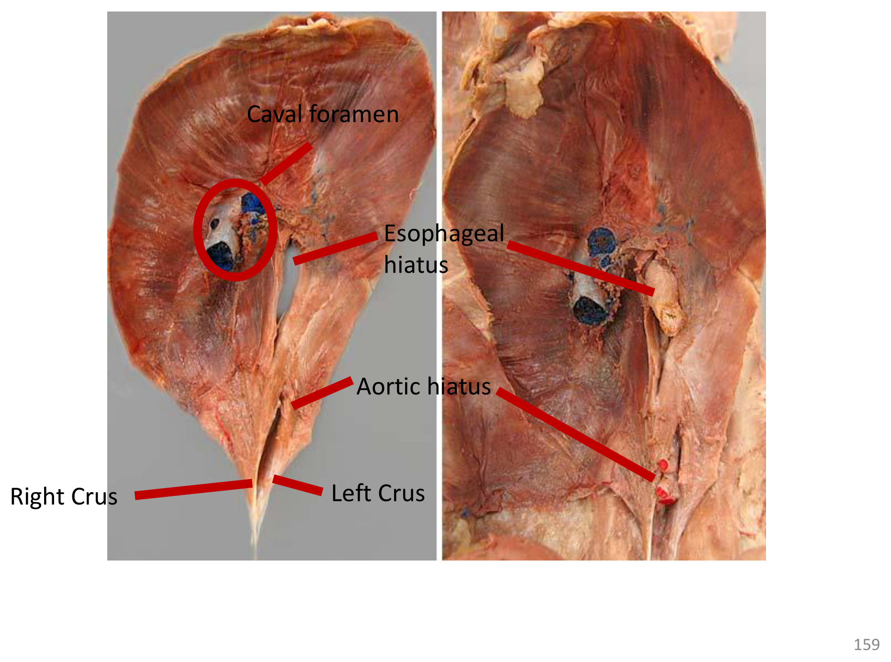

重點摘要
- 軟顎將咽腔分為鼻咽（呼吸專用）與口咽（消化專用），但兩條通道在咽部「互換位置」：吞嚥時會厭反射性蓋住喉口，讓食團從口咽繞到喉的背側進入食道，而不會誤入氣管——這個空間交換關係是理解嗆咳與吸入性肺炎機轉的基礎。
- 喉部真假聲帶的辨識是內視鏡檢查與插管的核心：聲帶（Vocal fold／true fold）由杓狀軟骨的聲帶突延伸而出，前庭皺襞（Vestibular fold／false fold）則位於其外側較淺處；貓的真假聲帶界線不明顯、且沒有喉囊（laryngeal saccule），是物種差異的常考重點。
- 短吻犬綜合症（Brachycephalic Syndrome）三大構造異常：鼻孔狹窄、軟顎過長、喉囊外翻，三者共同造成上呼吸道阻塞，是短吻犬（巴哥、法鬥、英鬥等）最重要的呼吸道臨床議題，務必三個構造一起記憶。
- 貓的喉部反射極度敏感，插管時容易誘發喉痙攣（laryngospasm）：插管技巧需在吐氣相操作，或於聲門局部給予麻醉藥物，是貓麻醉誘導的重要臨床細節；馬、兔、囓齒類則屬於絕對經鼻呼吸動物（obligate nasal breathers），會厭平時貼靠在軟顎背側，鼻道阻塞對牠們的威脅遠大於能經口呼吸的物種。
- 氣管的 C 形軟骨環開口朝向背側（肌膜膜部），玩具犬與迷你犬品種常見軟骨環過寬、塌陷，造成氣管塌陷（Tracheal collapse），臨床表現為特徵性的「鵝叫聲」吸氣性呼吸困難，是小型犬慢性咳嗽的重要鑑別診斷。
- 肺葉分佈物種差異是比較解剖學考點：犬貓牛豬羊多為左肺 2 葉（前葉又分前後兩部＋後葉）、右肺 4 葉（前中後葉＋副葉）；馬則左肺 1 葉、右肺 2 葉（主葉＋副葉），肺葉數目遠少於其他物種。
- 橫膈的三個裂孔通過三種不同構造，且被不同神經支配：腔靜脈孔（後腔靜脈通過）、食道裂孔（食道與迷走神經通過）、主動脈裂孔（主動脈通過）；橫膈本身由膈神經（Phrenic nerve）支配，與通過食道裂孔的迷走神經是兩條不同的神經，複習膈疝氣或膈神經麻痺時務必區分清楚。
- 禽類沒有橫膈，呼吸靠氣囊系統形成單向氣流：吸氣時空氣先進入後氣囊、再流經肺臟交換氣體，呼氣時才移至前氣囊排出體外，肺臟內幾乎不存在哺乳動物式的「殘餘氣體混合」問題，氣體交換效率因此優於哺乳動物——這是禽類對飛行高耗氧量的演化適應，也是禽病學呼吸道給藥／麻醉風險評估的解剖基礎。
呼吸系統總論與組織學 Overview & Histology
呼吸系統分為上呼吸道與下呼吸道兩大段，共用同一套以纖毛上皮為主的黏膜組織。
鼻腔（Nasal cavity）→ 咽（Pharynx）→ 喉（Larynx）→ 氣管（Trachea）上段
氣管下段 → 支氣管（Bronchi）→ 細支氣管（Bronchioles）→ 肺臟（Lungs，肺泡 Alveoli）→ 胸腔（Thorax）與胸膜（Pleura）
呼吸道組織學
呼吸道黏膜表面覆有大量纖毛（Cilia，單數 cilium），與黏液層共同構成「黏液纖毛清除機制」，將吸入的異物與病原向咽部方向清除。
主要功能與次要功能
交換二氧化碳與氧氣（Exchanging CO₂ for O₂）
發聲（始於喉部，聲帶＝上皮＋韌帶＋肌肉）、體溫調節、酸鹼平衡調節、嗅覺
鼻腔 Nasal Cavity
鼻腔是呼吸道的入口，除了通氣，也負責溫暖、濕潤與過濾吸入的空氣。
鼻孔 Nostrils
呼吸管的外部開口，由多塊軟骨支撐維持開放：背外側軟骨（Dorsal lateral）、腹外側軟骨（Ventral lateral）、副軟骨（Accessory）。
鼻道 Nasal Passages
位於鼻孔與咽之間，內部由鼻甲骨（Turbinates）構成複雜的捲曲構造，大幅增加黏膜表面積。
（纖毛協助）
鼻竇 Sinuses
鼻道向外突出的空腔，主要有額竇（Frontal sinus）與上頜竇（Maxillary sinus，又稱 Maxillary recess），鼻竇黏膜同樣具纖毛結構。
咽 Pharynx
咽（俗稱喉嚨）是呼吸道與消化道的共同通道，軟顎將其分區，是理解吞嚥與嗆咳機轉的關鍵構造。
| 分區 | 功能通道 |
|---|---|
| 鼻咽 Nasopharynx（軟顎背側） | 呼吸專用 |
| 口咽 Oropharynx（軟顎腹側） | 消化專用 |
| 喉咽 Laryngopharynx（軟顎尾側、喉部後方） | 消化與呼吸共用 |
鼻咽與口咽在喉咽處「互換位置」：軟顎前段將呼吸道（背側）與消化道（腹側）分開，但到了喉咽，食團必須從腹側的口咽繞到背側的喉部後方才能進入食道；吞嚥時會厭反射性蓋住喉口，暫時阻斷呼吸道入口，讓食團安全通過而不誤入氣管——這正是吞嚥反射協調失敗導致嗆咳、吸入性肺炎的解剖基礎。
咽的功能
主要功能為吞嚥（Swallowing），涉及軟顎、會厭、喉部肌肉的協調運動。
喉 Larynx
喉是連接咽與氣管的短小不規則管道，主要由軟骨構成骨架，兼具氣道保護（防止異物與食物誤入氣管）與發聲兩大功能。
喉部四大軟骨
| 軟骨 | 說明 |
|---|---|
| 會厭 Epiglottis | 吞嚥時反射性蓋住喉口，防止食物誤入氣管 |
| 杓狀軟骨 Arytenoid cartilage | 成對，具三個突起：楔狀突（Cuneiform process）、角狀突（Corniculate process）、聲帶突（Vocal process，聲帶附著處） |
| 甲狀軟骨 Thyroid cartilage | 俗稱喉結（Adam's apple） |
| 環狀軟骨 Cricoid cartilage | 環繞氣管入口，是喉部最尾側的軟骨 |
真假聲帶

| 構造 | 組成／說明 |
|---|---|
| 前庭皺襞 Vestibular fold（假聲帶） | 由前庭韌帶構成，不參與發聲 |
| 聲帶 Vocal fold（真聲帶） | 由上皮＋聲帶韌帶＋肌肉構成，是實際發聲構造 |
| 聲帶嵴 Vocal ridge、喉囊 Laryngeal saccule | 見下方短吻犬綜合症說明 |
※ 貓的真假聲帶界線不明顯，且貓沒有喉囊這項構造，是常考的物種差異。
聲門與咳嗽反射
聲門（Glottis）是由兩側杓狀軟骨與聲帶共同圍成的喉部開口。咳嗽的產生機制：
臨床重點：氣管內插管 Endotracheal Intubation
經聲門置入氣管內管並深入氣管，主要目的是預防吸入性肺炎。犬貓使用喉鏡輕壓舌根即可看見杓狀軟骨與聲門；兔的插管技巧因口腔角度特殊而較具挑戰性。
貓的喉部反射極為敏感，氣管內管一觸碰聲門即可能誘發喉痙攣（Laryngospasm，一種只允許空氣通過喉部的保護性反射），臨床上建議於吐氣相置入氣管內管，或於聲門處局部給予麻醉藥物以降低刺激反應。
絕對經鼻呼吸動物 Obligate Nasal Breathing
馬、兔、囓齒類屬於絕對經鼻呼吸動物：其會厭平時貼靠於軟顎背側，形成幾乎密閉的鼻咽通道，使牠們幾乎只能經鼻呼吸——因此鼻道阻塞（如鼻竇炎、異物）對這些物種的威脅遠大於能經口呼吸代償的物種（如犬貓），複習呼吸道急症時務必將此物種差異納入評估。
臨床重點：短吻犬綜合症 Brachycephalic Syndrome重要
字源 Brachy＝短、cephalic＝頭，是短吻犬品種（巴哥、法國鬥牛犬、英國鬥牛犬等）常見的上呼吸道阻塞症候群，核心為三項構造異常：
鼻孔開口過小，吸氣阻力增加
軟顎尾緣過度延伸，部分覆蓋喉口
前庭皺襞與聲帶間的凹陷組織外翻進入氣道，加重阻塞

氣管與支氣管 Trachea & Bronchi
氣管自喉部延伸至胸腔，最終分支進入肺臟形成氣體交換的樹狀通道。
氣管 Trachea
由纖維組織、平滑肌與透明軟骨（Hyaline cartilage）構成，軟骨呈C 形環（C-shaped cartilage rings），開口朝背側（由肌膜與平滑肌填補缺口，使食道通過時可局部膨脹）；內襯纖毛上皮。氣管尾端分為左右主支氣管，此分岔處稱氣管隆嵴（Carina），外觀呈倒 Y 字形。
常見於玩具犬與迷你犬品種，因 C 形氣管軟骨環過寬、支撐力不足而塌陷，造成吸氣性呼吸困難，典型表現為特徵性的「鵝叫聲」乾咳，是小型犬慢性咳嗽的重要鑑別診斷之一。
支氣管樹 Bronchial Tree
支氣管樹的軟骨支撐由近端向遠端逐漸消失：主支氣管與次級支氣管仍有軟骨環，細支氣管以下只剩平滑肌、不再有軟骨——這解釋了氣喘（哮喘）等疾病中支氣管收縮主要發生在細支氣管層級的機轉。
肺臟 Lungs
肺臟直接貼附於橫膈之上，分肺葉，物種間肺葉數目與分佈略有差異。
肺葉分佈物種差異
| 物種 | 左肺 | 右肺 |
|---|---|---|
| 貓、牛、犬、豬、羊 | 2 葉：前葉（再分前段＋後段）、後葉 | 4 葉：前葉、中葉、後葉、副葉 |
| 馬 | 1 葉 | 2 葉：主葉＋副葉 |
肺門 Hilus
空氣、血管、神經、淋巴管進出肺臟的部位，也是肺臟唯一被固定的區域，其餘肺實質可隨呼吸自由擴張收縮。
胎兒肺臟未曾通氣時呈實心質地（外觀類似肝臟），沉入水中；出生後曾呼吸過的肺臟因含氣而質地疏鬆、可浮於水面——此「肺浮沉試驗」概念可用於判斷死產動物是否曾經活產後死亡，是法醫獸醫學的經典應用。
臨床重點
支氣管樹對特定刺激物過度敏感，產生支氣管收縮；動物較人類少見，最常見於貓。
上呼吸道感染多為局部症狀；下呼吸道感染（支氣管炎、肺炎）則可能危及生命。
胸腔、胸膜與橫膈 Thorax, Pleura & Diaphragm
胸腔內襯一層薄膜——胸膜，並以橫膈與腹腔分隔；理解胸膜、心包膜與橫膈的層次關係，是判讀胸腔積液、氣胸、心包積液的解剖基礎。
胸膜 Pleura
包覆肺臟表面
貼附胸腔壁內側面
縱膈（Mediastinum）＝左右兩層縱膈胸膜＋兩層間的空間，將胸腔分為左右兩半，容納心臟、氣管、食道、大血管等正中構造。
心包膜的層次（補充，由外至內）
※ ②＋③＋臟層漿膜心包三者合稱「心包膜」；②③之間形成心包腔。詳細瓣膜與心臟構造請見「循環系統」頁面。
心包積液（Pericardial effusion）是心包腔內液體異常積聚，可壓迫心臟造成心填塞（cardiac tamponade），是急重症常見的胸腔內病灶之一。
橫膈 Diaphragm
分隔胸腔與腹腔的圓頂狀肌腱膜構造，中央為中央腱（Central tendon），周邊肌肉部分向背側延伸出左右腳（Crus，左腳／右腳）附著於腰椎腹側。

| 裂孔 | 通過構造 |
|---|---|
| 腔靜脈孔 Caval foramen | 後腔靜脈 |
| 食道裂孔 Esophageal hiatus | 食道、迷走神經 |
| 主動脈裂孔 Aortic hiatus | 主動脈（位置最靠背側） |
橫膈本身的運動由膈神經（Phrenic nerve）支配（源自頸神經叢，故頸髓高位損傷可能影響呼吸）；迷走神經（Vagus nerve）只是「通過」食道裂孔前往腹腔臟器，並不支配橫膈的收縮——兩條神經雖然在解剖位置上相鄰（迷走神經走在食道表面），但功能完全不同，是常見的混淆陷阱。
禽類呼吸系統 Avian Respiratory System
禽類的呼吸系統構造與氣流方向都與哺乳動物截然不同，是飛行高耗氧量演化出的高效率氣體交換系統。
上呼吸道差異
- 沒有軟顎，也沒有會厭（Epiglottis）
- 內鼻孔（Choanae）：一道裂縫，開口於鼻腔通往口腔頂部，連接鼻腔與口咽
- 喉（Larynx）不負責發聲——這是與哺乳動物最大的差異之一
鳴管 Syrinx
禽類真正的發聲器官，位於氣管在胸骨前方分岔（氣管膨大處），內含振動膜與肌肉，功能相當於哺乳動物的喉部聲帶。
氣囊系統 Air Sacs
氣囊是薄透明的膜狀構造，約佔呼吸系統總體積的 80%，共 9 對；功能包括：空氣儲存槽（維持單向氣流）、提供水禽浮力、經水分蒸發協助體溫調節（散熱）。
禽類呼吸的單向氣流機制重要
禽類沒有橫膈，也沒有殘餘氣體與新鮮空氣混合稀釋氧氣濃度的問題（哺乳動物肺泡內會有殘留氣體與新進氣體混合）；氣流呈完全單向：
禽類這套單向、高效率的氣體交換系統使其對吸入性毒物與麻醉氣體的暴露反應可能更快、更劇烈；氣囊系統的解剖分佈也是禽類麻醉時進行氣囊插管（air sac cannulation）——在上呼吸道阻塞情境下建立替代呼吸通道——的解剖基礎，禽病學或禽類麻醉時需特別留意。
學習重點整理
考試／臨床實務角度的整理，複習前可先快速掃過本節，找出自己不熟的部分再回對應章節細讀。
練習題 Practice Quiz
涵蓋鼻腔、咽、喉、氣管支氣管、肺臟、胸腔橫膈、禽類呼吸系統各章節重點，先自己作答再點「顯示答案」核對，答錯的觀念請回對應章節重讀一次。
軟顎前段將呼吸道（背側，鼻咽）與消化道（腹側，口咽）分開，但到了喉咽，食團必須從腹側繞到喉部背側才能進入食道，而空氣則要從喉部背側繼續向下進入氣管，兩者在此處的相對位置因此互換。吞嚥時會厭反射性蓋住喉口，暫時阻斷呼吸道入口，讓食團安全通過喉咽進入食道而不誤入氣管；若此反射協調失敗，食物或液體便可能誤入氣管造成嗆咳甚至吸入性肺炎。
短吻犬綜合症的三大核心構造異常是鼻孔狹窄、軟顎過長、喉囊外翻；氣管塌陷是另一個獨立的臨床議題，好發於玩具犬與迷你犬品種，與 C 形氣管軟骨環過寬有關，雖然可能與短吻犬有重疊，但並非短吻犬綜合症本身定義的三項核心異常之一。
貓的真假聲帶界線不明顯，且貓沒有喉囊（laryngeal saccule）這項構造，是喉部解剖常見的物種差異考點。
貓的喉部反射極為敏感，氣管內管一觸碰聲門即可能誘發喉痙攣（一種只允許空氣通過喉部的保護性反射），臨床上建議於吐氣相置入氣管內管，或於聲門處局部給予麻醉藥物以降低刺激反應。
馬、兔、囓齒類的會厭平時貼靠於軟顎背側，形成幾乎密閉的鼻咽通道，使牠們幾乎只能經鼻呼吸，無法像犬貓一樣在鼻道阻塞時有效經口代償呼吸。因此鼻道阻塞（如鼻竇炎、鼻腔異物、腫瘤）對這些物種的呼吸道威脅遠大於能經口呼吸的物種，臨床評估上呼吸道急症時必須將此物種差異納入考量。
主支氣管與次級（肺葉）支氣管仍有軟骨環支撐，但細支氣管開始就只剩平滑肌、不再有軟骨，這也解釋了氣喘等疾病中支氣管收縮主要發生在細支氣管層級的機轉。
橫膈的收縮運動由膈神經（Phrenic nerve）支配；迷走神經只是「通過」食道裂孔前往腹腔臟器，並不支配橫膈本身，兩者雖解剖位置相鄰但功能完全不同，是常見的混淆陷阱。
犬貓牛豬羊的左肺為 2 葉（前葉再分前後兩部、後葉），右肺為 4 葉（前葉、中葉、後葉、副葉）；馬則是左肺 1 葉、右肺 2 葉（主葉＋副葉），肺葉數目遠少於其他物種。
禽類沒有橫膈，也沒有哺乳動物肺泡內殘餘氣體與新進氣體混合稀釋氧氣濃度的問題，氣流呈完全單向：胸腹腔空間擴張使空氣先流入後氣囊，接著空氣被推入肺臟進行氣體交換，之後氣體移動至前氣囊，最後經氣管排出體外。這套系統仰賴 9 對氣囊作為空氣儲存與單向導流的構造，使氣體交換效率優於哺乳動物，是飛行高耗氧量的演化適應。
禽類的喉不負責發聲，真正的發聲器官是位於氣管分岔處的鳴管（syrinx），內含振動膜與肌肉；禽類也沒有會厭，內鼻孔（choanae）則是鼻腔與口咽相通的裂縫，並非發聲構造。